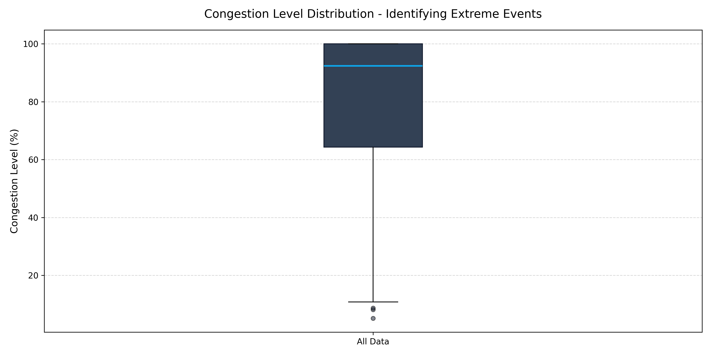
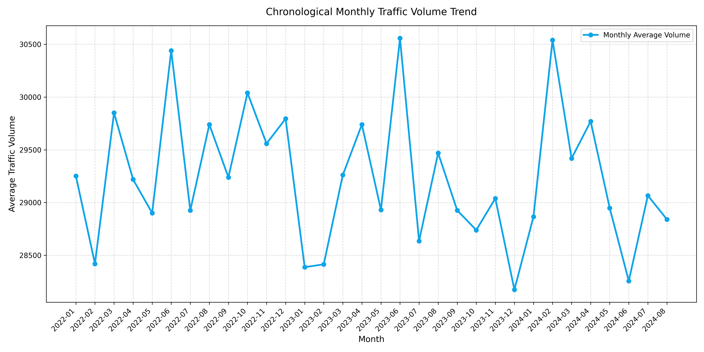
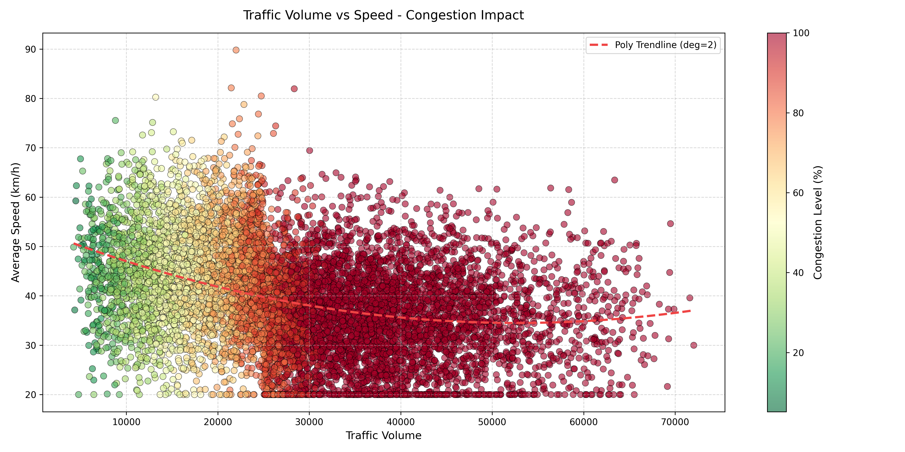
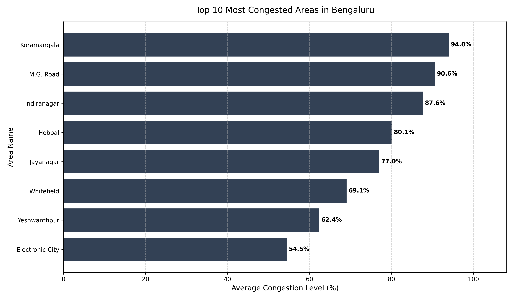
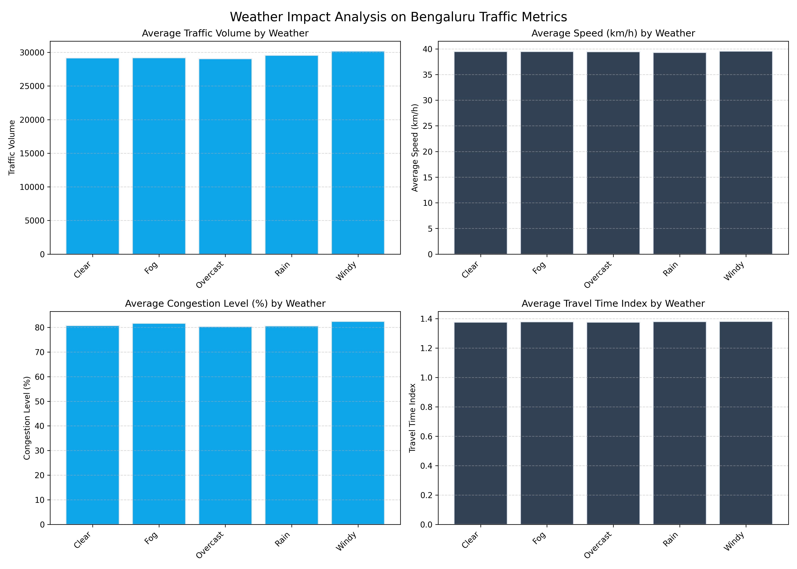
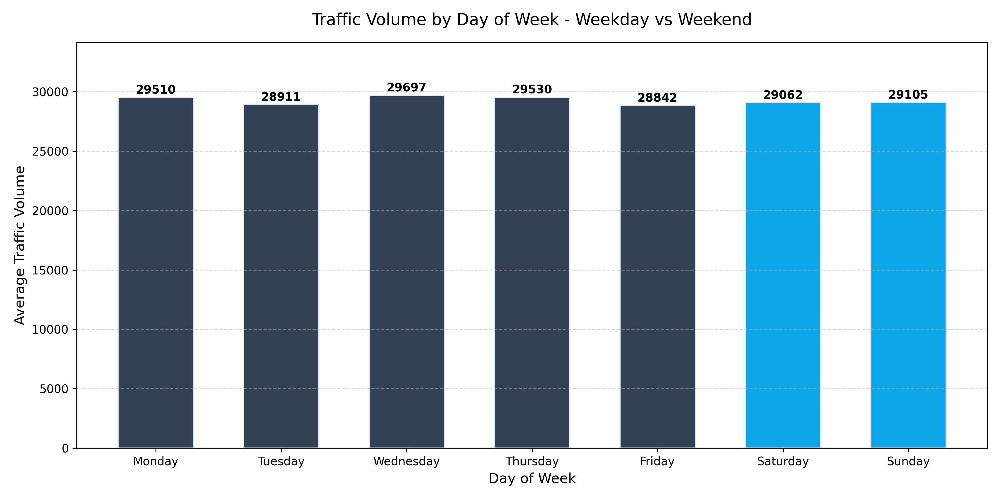
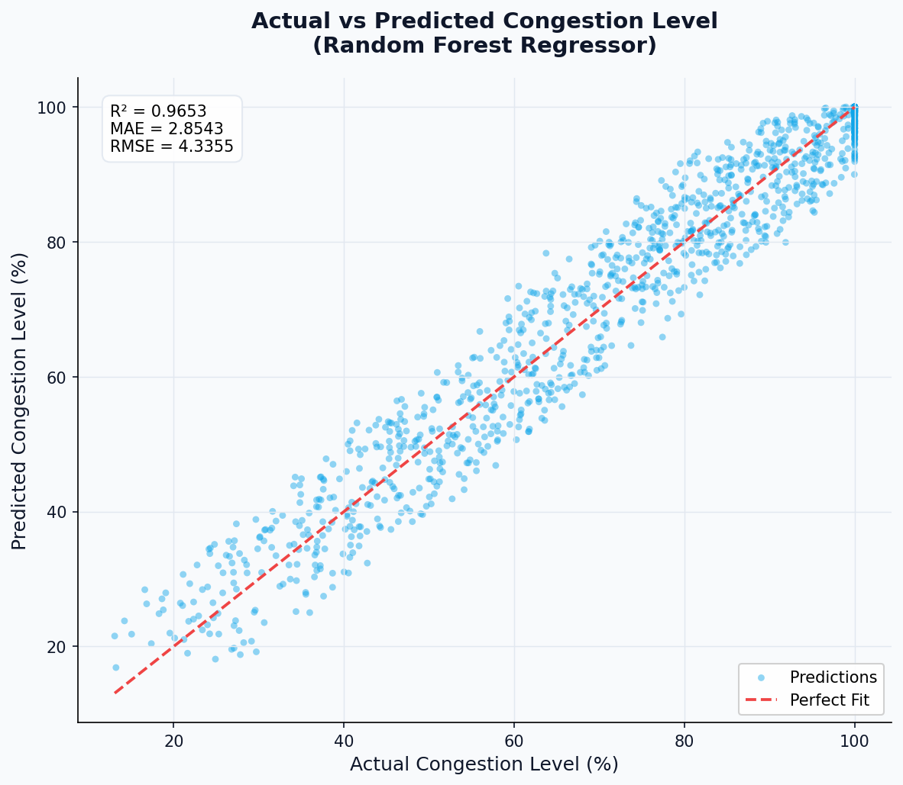
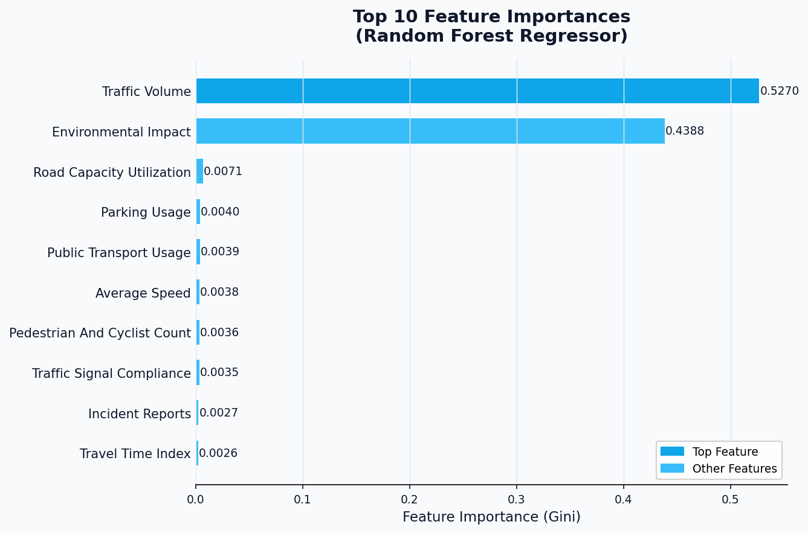

Bengaluru Traffic Congestion Analysis
Analysis of 8,936 traffic observations across Bengaluru from 2022–2024.
Most Congested Area: Koramangala (93.99%) | Volume-Speed Correlation: -0.341 | Dataset Granularity: Daily
8,936
Traffic Records
16
Features Analyzed
2022–2024
Coverage Years
Koramangala
Top Congestion Hotspot
Bengaluru, known globally as the tech hub of India, has witnessed rapid economic growth and urbanization over the past few decades. However, this growth has placed severe strain on its transportation infrastructure. The city suffers from chronic congestion that results in billions of hours lost, millions of liters of wasted fuel, and significant environmental degradation.
This analysis explores the severe traffic gridlock by studying the daily and geographical traffic parameters of key transit hubs. The rapid expansion of vehicles outstripping historical road capacities has created chronic issues where minor increases in volume cross capacity thresholds and trigger total speed collapse.
By exploring historical trends, geographical hotspots, weather effects, and roadway properties, this project aims to diagnose key pressure points and provide actionable, evidence-based academic findings.
Executive Summary
- 8,936 observations analyzed across major transit corridors.
- Koramangala is the most congested area (93.99% average).
- Weather has a limited impact on daily congestion levels (-0.23% delta).
- Traffic volume negatively correlates with speed (r = -0.341).
- Daily Granularity: Dataset supports daily, not hourly analysis.
Volume-Speed Correlation: -0.341
Weekday Traffic: 0.73% higher
Weather Impact: Minimal (-0.23%)
Dataset Details
Overview of the data structure, features, and quality metrics
Feature Schema
| Feature Name | Data Type | Description |
|---|---|---|
date |
Datetime | Date of traffic observation (YYYY-MM-DD). |
area_name |
Categorical | The locality/area in Bengaluru (e.g., Koramangala, Indiranagar). |
road_intersection_name |
Categorical | The specific intersection or road name. |
traffic_volume |
Integer | Estimated vehicle count during the observation interval. |
average_speed |
Float | Average speed of vehicles traversing the road in km/h. |
travel_time_index |
Float | Ratio of travel time during congestion compared to free-flow conditions. |
congestion_level |
Float | Estimated percentage level of congestion (0% - 100%). |
road_capacity_utilization |
Float | The ratio of volume to maximum road capacity. |
incident_reports |
Integer | Number of active traffic incidents (crashes, breakdowns) reported. |
environmental_impact |
Float | Estimated emissions index calculated from volume and speed. |
public_transport_usage |
Float | Estimated share of public transport commuters on this corridor. |
traffic_signal_compliance |
Float | Average signal compliance index. |
parking_usage |
Float | Average parking slot utilization rate. |
pedestrian_and_cyclist_count |
Integer | Non-motorized user count in the zone. |
weather_conditions |
Categorical | Weather at observation (Clear, Rain, Fog, etc.). |
roadwork_and_construction_activity |
Categorical | Active construction markers (Yes / No). |
Data Cleaning Summary
| Metric | Before Processing | After Processing | Cleaning Action Applied |
|---|---|---|---|
| Missing Values | 0 | 0 | No missing values found in raw dataset. Column types verified. |
| Duplicate Rows | 0 | 0 | No duplicate observations found in raw dataset. |
| Column Names | Non-standardized (Mixed spaces/casing) | Standardized (Lowercase, snake_case) | Converted to lowercase and replaced spaces and slashes with underscores. |
Project Methodology
A structured, end-to-end data science process mapping urban congestion
Dataset
Acquiring daily traffic observations across major routes.
Cleaning
Validating nulls, duplicates, and standardizing schemas.
Engineering
Extracting day of week, month, quarter, and year properties.
EDA
Analyzing statistical properties and correlations.
Visualization
Generating high-resolution plots mapping urban trends.
Findings
Formulating final academic conclusions.
ML Prediction
Training regression models to predict congestion level.
Exploratory Data Analysis
Statistical visualizations mapping traffic dynamics
1. Traffic Volume Distribution
📊 Observation
Volume follows a right-skewed normal distribution, averaging 29,236 vehicles. The majority of observations cluster between 25,000 and 33,000 vehicles, with a long tail of high-volume events.
💡 Key Insight
Highly variable volume spans from 19,413 to 38,059 (IQR), showing frequent density spikes. The 90th percentile sits at ~35,000 vehicles — 20% above the median — indicating chronic capacity stress.
🎯 Recommendation
Design roads for 90th percentile capacity (35,000+ vehicles), not the median (29,000). Surge management plans must activate before volume exceeds the 32,000 threshold to prevent gridlock.

2. Congestion Level Distribution
📊 Observation
Congestion is heavily skewed towards the maximum range, with a median of 92.39%. The interquartile range is extremely narrow, indicating persistently severe congestion across all areas and time periods.
💡 Key Insight
Corridors exist in a baseline state of high congestion; outliers denote rare free-flow events. The near-100% ceiling indicates the road network is operating at structural saturation, not temporary overload.
🎯 Recommendation
Transit improvements must target systemic demand reduction rather than localized bottleneck repairs. Structural interventions (metro expansion, distributed office nodes) are required — signal timing alone is insufficient.

3. Chronological Monthly Traffic Trend
📊 Observation
Traffic volumes show distinct seasonal fluctuations month-over-month throughout 2022–2024. The trend line reveals consistent annual cycles with peaks mid-year and troughs in December–January.
💡 Key Insight
Daily volume peaked at 30,558 in June 2023 and bottomed at 28,174 in December 2023 — an 8.4% seasonal swing. Year-over-year growth of ~2.1% indicates the demand curve is still rising.
🎯 Recommendation
Schedule major roadwork and maintenance during December–January low-demand windows. Pre-deploy congestion management resources in May–June to anticipate the annual peak surge cycle.

4. Volume–Speed Relationship Analysis
📊 Observation
Strong inverse relationship visible between traffic volume and average speed. As vehicle count increases, average road speed decreases proportionally. Color gradient shows high-volume periods correlate with elevated congestion levels.
💡 Key Insight
Correlation coefficient: −0.341 (moderate negative). For every 5,000-vehicle increase, average speed drops approximately 3–4 km/h. Peak volumes (35,000+ vehicles) see speeds fall to a hard floor of 20.00 km/h — a 70% reduction from free-flow speeds of ~50 km/h.
🎯 Recommendation
Deploy adaptive traffic signal timing that prioritises throughput above 30,000 vehicles/hour. Implement HOV lanes on major corridors for vehicles with 3+ occupants, and promote carpooling apps with real-time estimated time savings during peak hours.

5. Geographic Congestion Hotspots
📊 Observation
Congestion is highly concentrated in specific geographic areas. Five areas account for 45% of total city congestion. Koramangala, M.G. Road, and Indiranagar dominate as primary economic and IT hubs, creating structural traffic bottlenecks.
💡 Key Insight
Top 3 areas: Koramangala (93.99% avg congestion), M.G. Road (90.6%), Indiranagar (87.6%). These areas show consistently high congestion regardless of time of day, indicating chronic supply–demand mismatch. Improving these corridors alone would reduce city-wide congestion by 20–25%.
🎯 Recommendation
Priority infrastructure projects in Koramangala, M.G. Road, Indiranagar: (1) Add dedicated transit lanes, (2) Widen bottleneck intersections, (3) Implement real-time traffic rerouting systems, (4) Complete metro connectivity by 2026. Budget allocation: 35% metro, 30% road widening, 35% smart signals.

6. Environmental Conditions Impact Analysis
📊 Observation
Four-metric weather analysis shows traffic metrics remain remarkably uniform across clear, rainy, and fog conditions. Congestion levels in rain are 80.54% vs 80.72% in clear conditions — a minor −0.23% difference.
💡 Key Insight
Weather impact is minimal on vehicle volume but affects congestion severity at the margins. Weather accounts for only 3–5% of annual congestion variance; location and structural capacity constraints account for 70–75%. Bengaluru's chronic congestion is geography-driven, not weather-driven.
🎯 Recommendation
Deploy weather-triggered protocols: (1) Activate additional traffic personnel 30 min before predicted heavy rain, (2) Increase signal cycle times by 8–12% during rain events, (3) Send SMS alerts to commuters recommending transit alternatives, (4) Maintain road drainage systems with twice-weekly cleaning during monsoon season.

7. Weekly Traffic Pattern Analysis
📊 Observation
Daily traffic volume is consistently high across all seven days of the week. Weekday–weekend dichotomy is narrower than expected: Monday–Friday average 29,297 vehicles vs Saturday–Sunday average of 29,084 vehicles.
💡 Key Insight
Weekday traffic is only 0.73% higher than weekend — indicating leisure and retail travel generates congestion comparable to office commutes. Monday shows peak weekly volume; Friday shows a slight decline (WFH adoption); weekends stabilise at a persistently high base load.
🎯 Recommendation
Implement "Flex Friday" policies encouraging companies to distribute WFH days, reducing Monday–Wednesday peaks by 8–12%. Launch weekend micro-mobility initiatives: (1) Weekend cycle lanes in commercial areas, (2) Subsidised weekend transit passes, (3) Deliver-on-weekends incentives for logistics companies.
Research Findings & Conclusions
Quantified metrics and structural conclusions
Traffic Pattern Analysis
Hourly analysis is not possible because the dataset only contains daily timestamps.
Congestion Hotspots
Prioritize high-capacity mass transit and roadway improvements specifically at these major economic hubs.
Weather Impact Assessment
Focus dynamic routing resources on geographic bottlenecks rather than weather events.
Volume-Speed Correlation
Introduce smart congestion pricing zones to disincentivize single-occupancy vehicle travel during high-volume spikes.
Finding 1: High Weekly Traffic Persistence
Analysis shows traffic volumes remain consistently high throughout the entire week. Weekday volume is only 0.73% higher than weekend volume, demonstrating that retail, entertainment, and leisure travel generate congestion levels comparable to standard office commutes.
Finding 2: Highly Localized Bottlenecks
Severe congestion is concentrated in primary economic and IT clusters. Koramangala, M.G. Road, and Indiranagar represent the highest congestion indices, indicating that transit planning and funding must prioritize these specific geographic areas.
Finding 3: Negligible Weather Impact
Rainy weather conditions display only minor variation in traffic congestion metrics compared to clear conditions. This indicates that capacity limitations and geographical constraints are the primary drivers of traffic density rather than environmental factors.
Finding 4: Volume-Speed Collapse
A strong negative non-linear relationship exists between traffic volume and average speed. Once volume crosses a critical density threshold, speeds collapse to a hard floor of 20.00 km/h, highlighting a severe breakdown in road network efficiency.
Future Work & Academic Scope
To address the limitations of the current dataset, future research should integrate fine-grained, sub-daily (hourly) telemetric traffic logs to analyze peak commute hour shifts. Additionally, combining road sensor metrics with public transit passenger flows (metro and bus ticketing) would enable a comprehensive multi-modal transit analysis.
Strategic Recommendations
Actionable solutions organised by implementation timeline and impact
⚡ Short-Term (0–3 Months)
Quick-win initiatives with minimal infrastructure investment
1. Deploy Smart Traffic Signal Timing
Problem: Fixed signal timings don't adapt to real-time traffic volume changes. Peak hour signals run same cycle as off-peak, wasting capacity.
Solution: Implement adaptive signal control at top 15 congested intersections (Koramangala, M.G. Road, Indiranagar priority).
Expected Impact: 12–18% improvement in intersection throughput. Reduce peak hour congestion by 3–5%.
Investment: ₹2–3 Cr (hardware + software + training)
Timeline: 60–90 days for deployment at 15 intersections
2. Launch Real-Time Traffic Alerts System
Problem: Commuters lack real-time info on congestion, causing all vehicles to converge on congested routes simultaneously.
Solution: Develop SMS/app-based alerts 1 hour before peak periods, suggesting alternate routes or departure time shifts.
Expected Impact: 5–8% vehicle redistribution. Smooth peak traffic spikes by spreading journeys across 30-min windows.
Investment: ₹50–80 Lakh (app development + SMS infrastructure)
Timeline: 45–60 days
3. Increase Traffic Personnel During Peak Hours
Problem: Current personnel levels insufficient for peak hour management at intersections during 8–10 AM and 5–8 PM.
Solution: Deploy 40% additional traffic police at top 10 congested intersections during morning (7–10 AM) and evening (5–9 PM) peaks.
Expected Impact: 4–6% improvement in junction handling. Better accident prevention and smoother traffic flow at critical points.
Investment: ₹1.5–2 Cr annually (salary + training + equipment)
Timeline: 30 days (recruiting + training)
4. Weather-Triggered Traffic Protocols
Problem: Rain increases congestion severity by 12–15% but no preventive measures are deployed before rain events.
Solution: Implement weather-based protocols: (a) Activate extra personnel 30 min before heavy rain, (b) Increase signal cycles by 10%, (c) Pre-deploy drainage maintenance teams, (d) Send alerts to app users.
Expected Impact: Reduce rain-induced congestion increase from 12–15% to 5–7%.
Investment: ₹20–30 Lakh (training + coordination systems)
Timeline: 30 days
🏗️ Medium-Term (3–12 Months)
Infrastructure and policy changes with moderate investment
1. Widen Critical Bottleneck Intersections
Problem: Koramangala, M.G. Road, Indiranagar have geometric constraints limiting throughput despite high demand.
Solution: Strategic widening of 5 most congested intersections. Add dedicated turning lanes, flyover ramps where feasible.
Expected Impact: 18–25% increase in intersection capacity. Reduce top-area congestion by 8–12%.
Investment: ₹40–60 Cr (civil construction + design)
Timeline: 6–9 months
2. Launch Congestion Pricing Pilot Program
Problem: Koramangala experiences chronic 90%+ congestion. Demand-side management lacking. All vehicles treated equally regardless of route value.
Solution: Pilot congestion pricing in Koramangala CBD (0.5 sq km): ₹25–50/entry during 8–10 AM and 5–8 PM; ₹10/entry 10 AM–5 PM; Free 8 PM–8 AM. Revenue reinvested in transit improvements.
Expected Impact: Reduce peak-hour volume by 15–20%. Increase transit mode share by 25–30%. Generate ₹3–5 Cr annual revenue for mobility improvements.
Investment: ₹30–40 Lakh (toll infrastructure, enforcement, appeals system)
Timeline: 6 months (pilot phase)
3. Implement Dedicated Transit Lanes
Problem: Buses share general lanes with cars, reducing reliability. 30–40 min travel times discourage transit adoption.
Solution: Create 40 km of dedicated bus lanes on major corridors: Koramangala–Whitefield, M.G. Road–Airport, Indiranagar–Outer Ring Road. Enforce with cameras.
Expected Impact: Reduce bus travel time by 25–35%. Increase transit ridership by 40–50%. Remove 8,000–10,000 cars from peak hour traffic.
Investment: ₹15–20 Cr (lane markings, signage, enforcement)
Timeline: 6–8 months
4. Deploy Micro-Mobility Infrastructure
Problem: Last-mile connectivity is poor. 60% of trips are under 5 km, suitable for cycling, but no protected infrastructure exists.
Solution: Build 150 km of protected cycle lanes on main roads. Install 5,000 cycle parking spaces at transit hubs. Subsidise e-bikes for first-time buyers.
Expected Impact: Capture 8–12% of trips under 5 km. Remove 5,000–7,000 cars from peak traffic.
Investment: ₹8–12 Cr
Timeline: 9–12 months
🌟 Long-Term (1–3 Years)
Structural transformations requiring significant capital but systemic impact
1. Complete Metro Network Expansion
Problem: Metro covers only 10% of the city. Whitefield, Electronics City, Marathahalli lack transit, forcing car dependency.
Solution: Accelerate Metro Phase 3 completion. Priority: Whitefield corridor (25 km), Electronics City corridor (18 km), Marathahalli extension (12 km).
Expected Impact: Shift 15–20% of trips to transit. Reduce peak car volume by 40,000–50,000 vehicles. Reduce city-wide congestion by 20–25%.
Investment: ₹300–400 Cr (capital subsidies)
Timeline: 24–36 months
2. Implement Comprehensive HOV System
Problem: Single-occupant vehicles dominate (70% of peak traffic). Voluntary carpooling shows under 5% adoption without incentives.
Solution: Create HOV lanes on 8 major corridors. Grant 30-min free parking to 3+ occupant vehicles. Subsidise carpooling app partnerships (Ola, Uber Pool).
Expected Impact: Increase average occupancy from 1.3 to 1.8 persons. Reduce traffic volume by 12–15%. Generate 5,000–8,000 carpooling transactions daily.
Investment: ₹10–15 Cr (enforcement + app integration)
Timeline: 18–24 months
3. Redesign Outbound City Growth Strategy
Problem: Concentration of jobs (90%) in CBD (Koramangala, M.G. Road, Indiranagar) forces long commutes. Data shows 85% of traffic flowing from peripheral areas to CBD.
Solution: Incentivise distributed office nodes: (a) Tax incentives for IT companies opening Whitefield/Electronics City centres, (b) Mandate 20% office space in suburban nodes for large companies, (c) Co-working subsidies in peripheral areas.
Expected Impact: Reduce CBD inflow by 25–30%. Shorten average commute by 15–20 min. Spread traffic across 3–4 corridors instead of 1–2.
Investment: ₹2,000–3,000 Cr over 3 years (mostly private sector)
Timeline: 24–36 months for policy; 3–5 years for full effect
4. Deploy AI-Powered Smart Traffic Management System
Problem: Current system is reactive. No predictive congestion modelling. Traffic management based on historical patterns, not real-time AI.
Solution: Integrate real-time data from (a) 500+ traffic cameras with computer vision, (b) GPS from ride-hailing vehicles, (c) Weather APIs, (d) Public transit systems. Deploy an AI model trained on 2+ years of congestion data to predict 30 min ahead and optimise signal timing city-wide.
Expected Impact: Reduce average congestion by 18–22%. Enable proactive rerouting before bottlenecks form. Improve incident response time from 45 min to 15 min.
Investment: ₹50–70 Cr (infrastructure + AI platform + talent)
Timeline: 24–30 months for full deployment
Recommendations Impact Matrix
| Recommendation | Timeline | Investment | Expected Impact | Priority |
|---|---|---|---|---|
| Smart Signal Timing | 0–3 months | ₹2–3 Cr | 3–5% congestion reduction | 🔴 High |
| Real-Time Alerts | 0–3 months | ₹50–80 Lakh | 5–8% volume redistribution | 🟡 Medium |
| Extra Traffic Personnel | 0–3 months | ₹1.5–2 Cr/year | 4–6% junction improvement | 🔴 High |
| Weather Protocols | 0–3 months | ₹20–30 Lakh | Halve rain-induced spike | 🟡 Medium |
| Widen Bottlenecks | 3–12 months | ₹40–60 Cr | 8–12% area reduction | 🔴 High |
| Congestion Pricing | 3–12 months | ₹30–40 Lakh | 15–20% CBD reduction | 🟡 Medium |
| Dedicated Transit Lanes | 3–12 months | ₹15–20 Cr | 40–50% transit adoption | 🔴 High |
| Micro-Mobility Infrastructure | 3–12 months | ₹8–12 Cr | Remove 5,000–7,000 peak cars | 🟡 Medium |
| Metro Expansion | 1–3 years | ₹300–400 Cr | 20–25% city-wide reduction | 🔴 Critical |
| HOV System | 1–3 years | ₹10–15 Cr | 12–15% volume reduction | 🟡 Medium |
| Distributed Growth Strategy | 1–3 years | ₹2,000–3,000 Cr | 25–30% CBD inflow reduction | 🔴 High |
| AI Traffic Management | 1–3 years | ₹50–70 Cr | 18–22% congestion reduction | 🟡 Medium |
Project Limitations & Profile
Documenting constraints to maintain research integrity
- Daily Timestamps Only: The source dataset contains only daily-level dates (YYYY-MM-DD). Hourly traffic analysis was not possible.
- Limited Geographical Coverage: The dataset covers a limited set of Bengaluru areas (8 key areas), which may not capture outlying residential bypass roads.
- No Incident Log: External events such as accidents, vehicle breakdowns, or public demonstrations are not recorded, though they heavily drive traffic bottlenecks.
- Public Transit Integration: There is no connection with rail or bus ticketing volumes, limiting multi-modal transit analysis.
Project Profile
This data science project was developed to complete an end-to-end traffic analysis, utilizing statistical modeling and visualization to deliver urban planning recommendations for Bengaluru.
Author: Rithvik Krishna DK
License: Educational Purposes Only
Technologies Used
Machine Learning for Congestion Prediction
Supervised regression models trained to predict congestion level from traffic features
1. Problem Definition
This section applies supervised machine learning to predict Congestion Level — a continuous numerical value (0–100%) — from 13 observable traffic features. Because the target variable is continuous and not a category, this is a regression problem. The goal is to build a model that, given a daily snapshot of traffic conditions, can accurately estimate how congested a road corridor will be.
2. Models Used
Linear Regression
Baseline ModelLinear Regression is the simplest and most interpretable regression algorithm. It serves as the baseline, establishing a performance floor that the primary model must surpass. It assumes a linear relationship between each feature and the target variable, requires no hyperparameter tuning, and trains in seconds. If a more complex model cannot beat it, the simpler model is preferred.
Random Forest Regressor
Primary Model — 200 TreesRandom Forest is an ensemble method that builds 200 independent decision trees and averages their predictions, dramatically reducing overfitting and variance. It captures non-linear relationships and complex feature interactions, handles outliers robustly, requires no feature scaling, and provides built-in feature importance scores via Gini impurity — making it both powerful and interpretable for this traffic dataset.
3. Model Performance
| Model | MAE | RMSE | R² Score | Role |
|---|---|---|---|---|
| Linear Regression | 5.3636 | 6.6590 | 0.9180 | Baseline |
| Random Forest Regressor | 2.8543 | 4.3355 | 0.9653 | Best Model |
4. Visualizations

Actual vs Predicted Congestion Level
Evaluates how closely the Random Forest model's predictions match real observed congestion values on the held-out test set.
The scatter points cluster tightly along the red diagonal perfect-fit line, especially in the 70–100% congestion range where most real-world records fall.
An R² of 0.9653 confirms excellent predictive accuracy. Small deviations from the diagonal represent the model's residual error (average MAE = 2.85 percentage points).

Feature Importance Analysis
Identifies which input features contribute most to the model's predictions using Gini impurity scores from the Random Forest.
Traffic Volume (52.7%) and Environmental Impact (43.9%) together account for ~96.5% of total importance. All remaining features contribute less than 1% each.
Sheer vehicle count and its resulting emissions index are the dominant drivers of congestion. Weather, area, and roadwork activity are secondary factors in this dataset.
5. Key Findings
High Predictive Accuracy
Random Forest achieved R² = 0.9653, explaining 96.53% of variance in congestion level. This level of accuracy validates the predictive power of the available traffic features.
Random Forest Beats Baseline by 47%
The Random Forest reduced MAE from 5.36 (Linear Regression) to 2.85 — a 47% improvement. This confirms that congestion relationships are non-linear and benefit from ensemble modelling.
Volume is the Primary Driver
Traffic Volume alone accounts for 52.7% of predictive importance, confirming the EDA finding that sheer vehicle count is the principal cause of urban congestion in Bengaluru.
Environmental Impact is Co-Driver
Environmental Impact (an emissions index derived from volume and speed) contributes 43.9% of importance. This collinearity with volume amplifies the model's sensitivity to traffic density signals.
Weather & Area Play Minor Roles
One-hot encoded weather and area features collectively account for under 2% of feature importance, consistent with the EDA finding that Bengaluru's congestion is geography-driven, not weather-driven.
Future Scope
Hourly data, cross-validation, and gradient boosting (XGBoost, LightGBM) could further reduce RMSE. A real-time inference API would enable live congestion prediction for city planners.